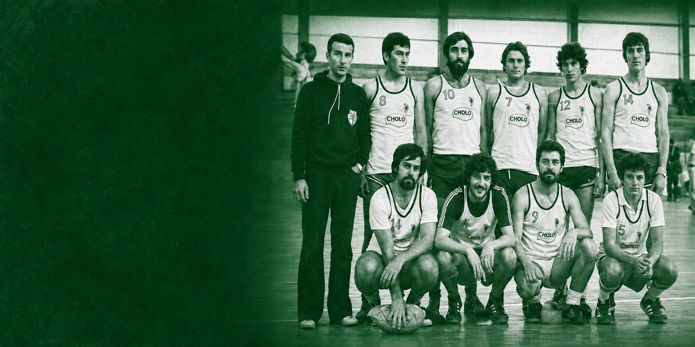
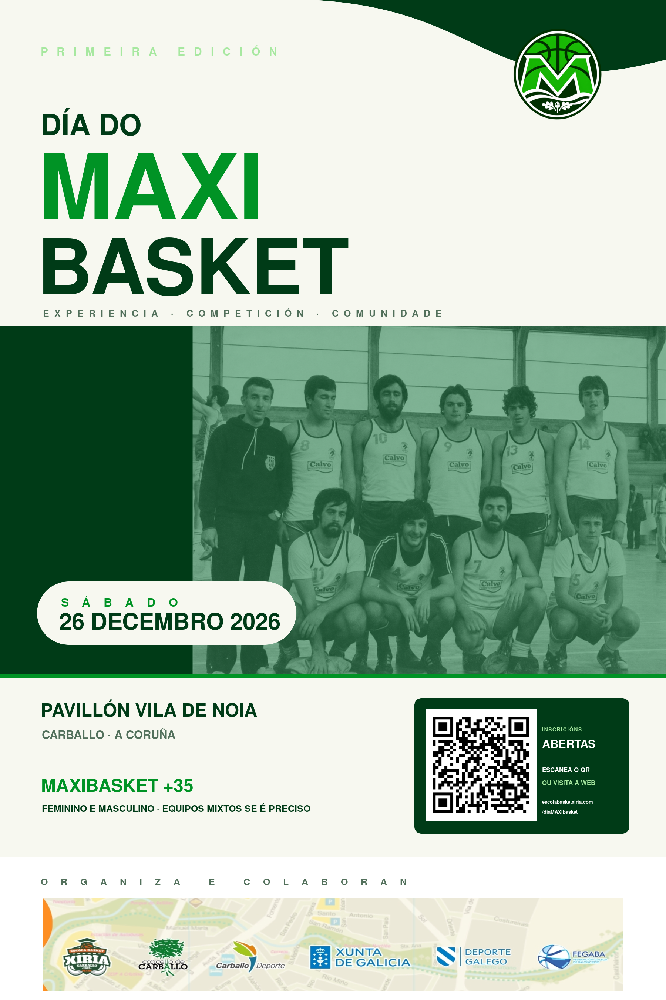

A experiencia segue no parqué
O baloncesto
non ten idade.
Primeiro Día do Maxibasket de Carballo. Unha xornada para competir, reencontrarse e celebrar o xogo.
26DEC
2026
BAIXAR ↓
2026
01 · A XORNADA
Un día enteiro para
xogar como sempre.
Carballo abre a pista á comunidade maxibasket. O 26 de decembro, o Pavillón Vila de Noia será punto de encontro de equipos masculinos e femininos de máis de 35 anos.
Competición 5×5, amizade e paixón polo balón. Cada equipo deberá contar con, polo menos, 7 xogadores/as. A composición dos grupos adaptarase ás inscricións e poderá ser mixta se fose necesario.
26 de decembro2026 · día completo
Vila de NoiaCarballo · A Coruña
fem. e masc.Equipos mixtos se é preciso
en pistaMínimo 7 xogadores/as por equipo
PRIMEIRA EDICIÓN
DÍA DO
MAXIBASKET
CARBALLO · 26.12.2026

PAVILLÓN
VILA DE NOIA
+35
VILA DE NOIA
+35
02 · INSCRICIÓN
Formade equipo.
Vémonos en Carballo.
A inscrición xa está aberta. Reúne un mínimo de 7 xogadores/as, rexistra o teu equipo e consulta as normas de participación.
ImportanteO formato, os horarios e a distribución de categorías confirmaranse unha vez pechadas as inscricións.
03 · COMPETICIÓN
Horarios
en preparación.
A pista está reservada.
Estamos organizando os partidos para aproveitar ao máximo a xornada. Aquí poderás consultar os grupos, os encontros e os resultados en canto se confirme a participación.
04 · ACTUALIDADE
Últimas
novas.
Nace o Día do Maxibasket de Carballo.
O primeiro encontro dedicado ao baloncesto sénior xa ten data: o 26 de decembro de 2026.
Ler máis →Consulta a ficha de inscrición e as normas.
Ver inscrición →Horarios, grupos e información de servizos.
Ver horarios →05 · CARTELERÍA
O cartel
oficial.
Descarga e comparte o cartel do primeiro Día do Maxibasket de Carballo.
Descargar PNG alta calidade ↓
VER CARTEL COMPLETO ↗LOGOS OFICIAIS
Descargas de logo


CARBALLO
06 · CONTACTO
Falamos
de baloncesto.
Para participar, colaborar ou resolver calquera dúbida:
info@diadomaxibasket.org607 847 925Organiza Escola Basket Xiria, coa colaboración do Concello de Carballo e entidades vinculadas ao baloncesto galego.